Контекст
S&P Chat — AI-приложение для налоговых и юридических консультаций
Команда S&P — немецкого объединения Schippke & Partners — пришла с идеей mobile-first AI-приложения для налоговых и юридических консультаций на немецком и английском языках. Продукт планировался как самостоятельный сервис с будущей интеграцией в Schippke OS.
Сроки были сжатыми: за 1,5 недели нужно было пройти путь от первого обсуждения до прототипа, тестирования, доработок и закрытого релиза в App Store.
Задача
Собрать интерактивный прототип, используя AI как инструмент ускорения — от макета к рабочему коду, — при этом самому отвечая за сценарии, логику и визуальные решения.
Дискавери
Сначала я разобрал, как устроены AI-чаты и агенты у лидеров рынка: Perplexity, ChatGPT, Linear, Notion, Arc и Superhuman. Смотрел не на визуальный шум, а на паттерны, которые помогают пользователю быстро сформулировать запрос, доверять ответу и не теряться в истории диалога.
Из исследования собрал короткую UX-заметку: какие сценарии нужны в первом прототипе, как должен вести себя чат, где пригодится deep search, как показать голосовой ввод и как не перегрузить mobile-first интерфейс.
Юридические и налоговые консультации — зона риска, поэтому я закладывал в интерфейс защиту от слепого доверия: ответ подаётся как документ со ссылками, а не как вердикт, и сценарий подталкивает уточнять. За корректность отвечает AI-модель, содержательная ответственность — на стороне заказчика.
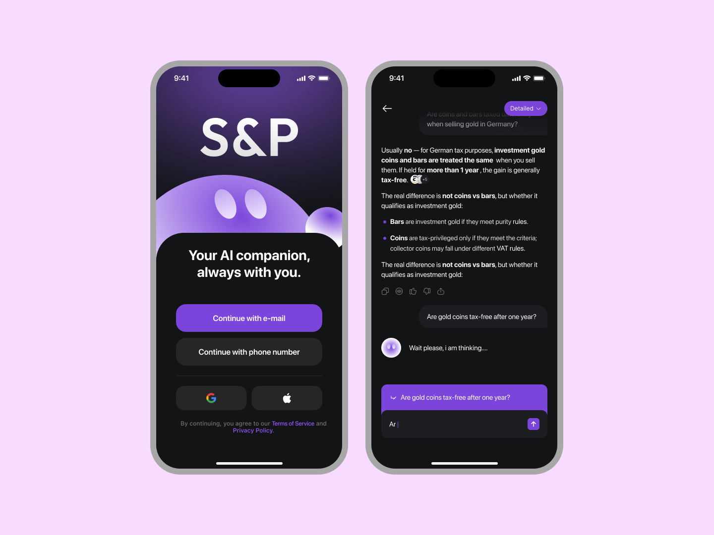
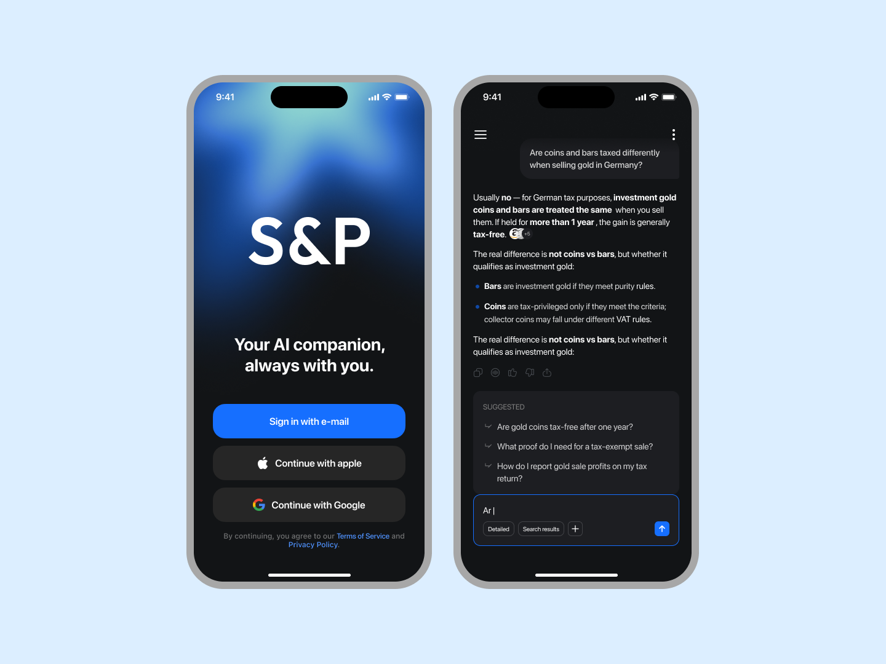
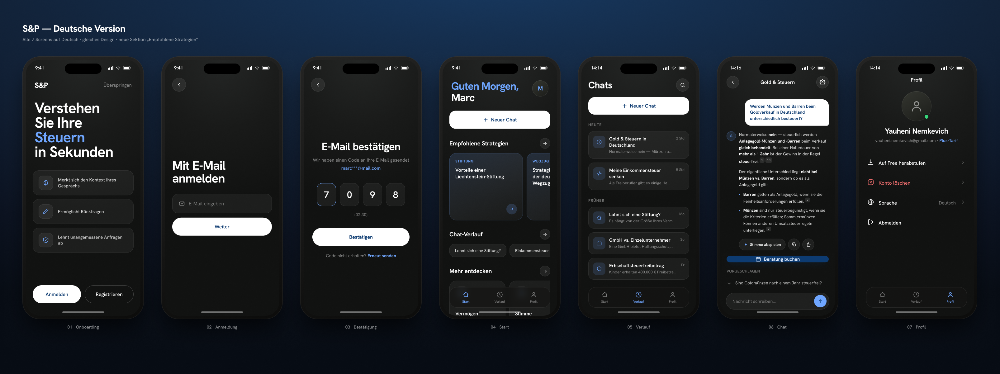
Генерация и концепт
После дискавери я разделил работу на два параллельных потока: рабочую основу и визуальную проработку. Я задавал Cursor промпты с чёткими UX-ограничениями — то есть AI собирал каркас по моим правилам, — а сам параллельно проектировал визуальный язык, тёмную тему, типографику и подачу ответа как структурированного документа.
Так я мог проверять свои решения сразу в интерактиве, а не зависать в статичных макетах. Для такого сжатого проекта это было критично: дизайн и прототип двигались одновременно, но направление всегда задавал я, а AI ускорял сборку.
Результаты концептов
На первой итерации я показал заказчику несколько направлений. Лучше всего сработал вариант, где строгая чёрно-белая основа соединялась с выразительными акцентами и mobile-first навигацией.
Этот концепт стал базой для дальнейшей проработки экранов, пользовательских сценариев и сборки прототипа под тест.
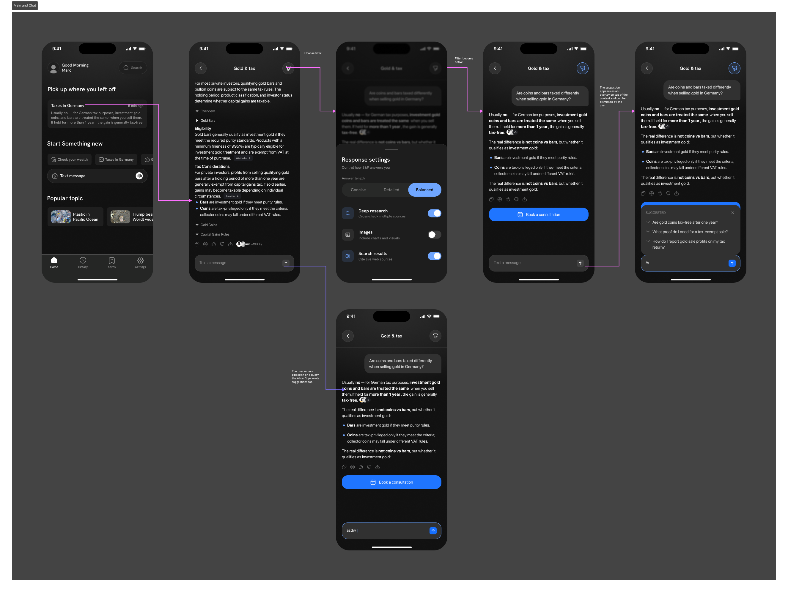
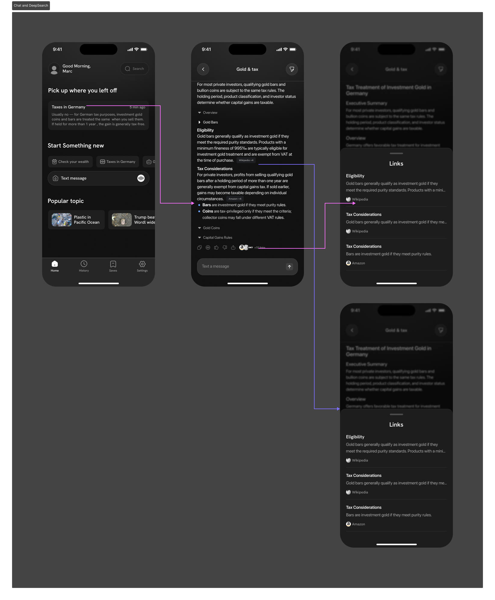
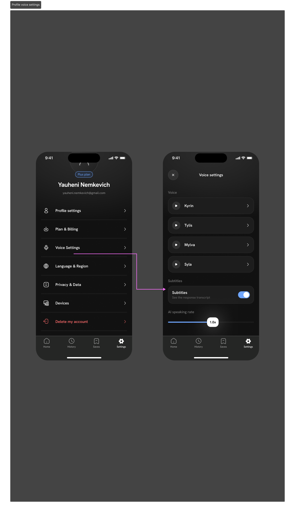
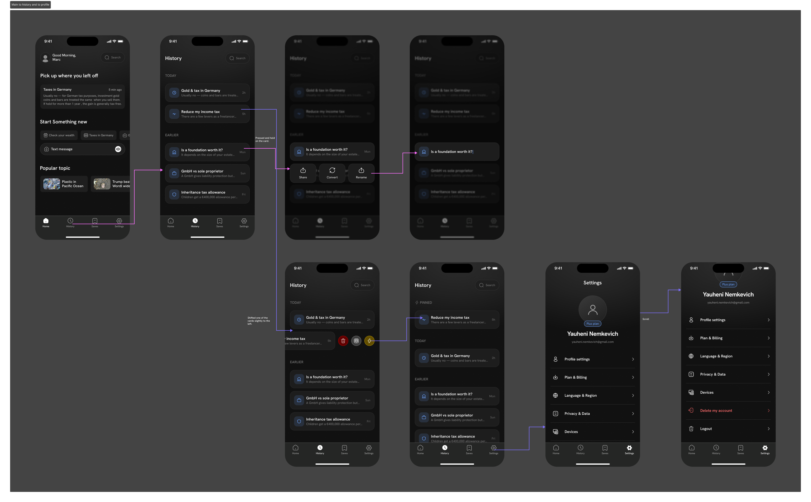
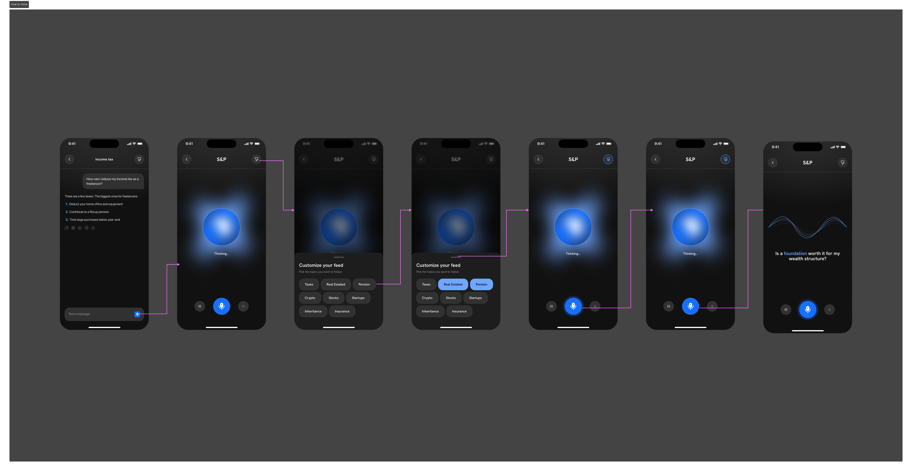
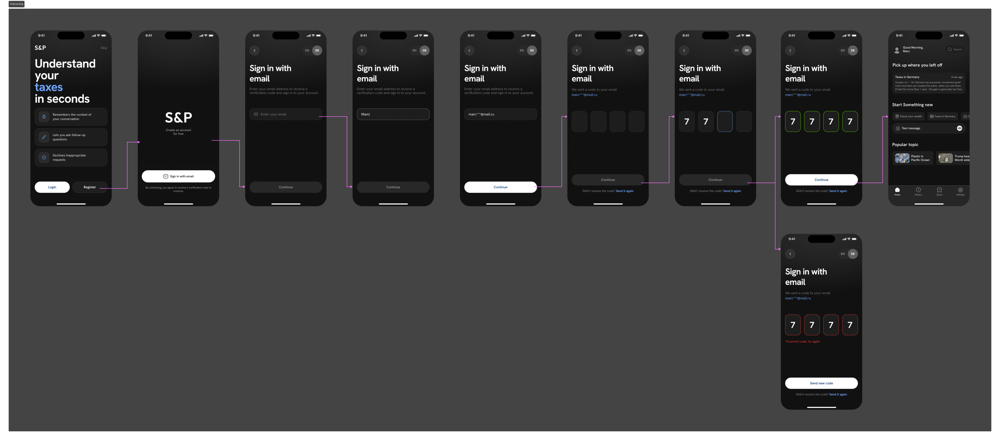
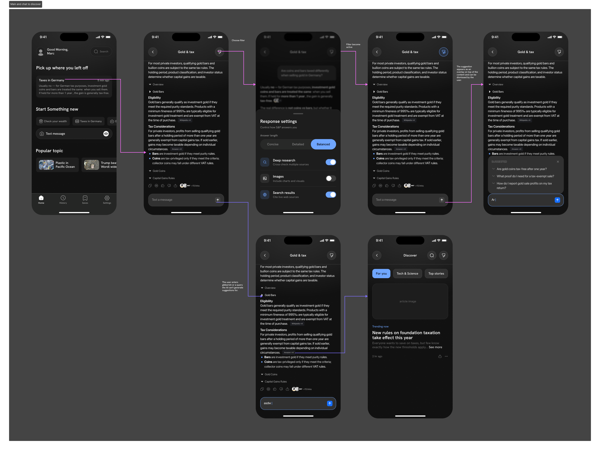
Доработка концепта
Вместе с заказчиком мы собрали документ требований и прошлись по концепту, чтобы найти UX-недочёты до сборки. После этого я доработал флоу: главный экран, чат, deep search, историю, профиль, голосовой сценарий и онбординг.
К середине работы был готов цельный набор экранов, на котором можно было собирать прототип и проверять продукт на живых сценариях.
Разработка
Когда макеты и флоу стали плотными, я перешёл к сборке прототипа. Использовал Codex с доступом к Figma через MCP, чтобы код опирался прямо на мои макеты, а не на пересказ интерфейса словами.
Я задавал структуру, промпты и ограничения, проверял каждый результат в браузере, ловил расхождения с дизайном и правил их вручную. AI ускорял путь от макета до кода — но что и как должно работать, решал я. Довёл прототип до состояния, которое можно показать пользователям и передать команде.
Полторы недели легли так: день на дискавери, два-три на концепт и визуал, один на требования, два на флоу, два на сборку прототипа — и релиз.
Результат
За 1,5 недели мы прошли путь от первого звонка до закрытого релиза в App Store. Я собрал рабочий mobile-first прототип AI-приложения, который подтвердил направление продукта и открылся первым пользователям по инвайтам. AI ускорил путь от макета к коду, но продуктовые и дизайнерские решения — ключевые сценарии, UX-паттерны чата и deep search, визуальный язык — оставались за мной. Команда получила репозиторий и понятную основу для следующего этапа и продолжила разработку на его базе.
Другие проекты

UX-переработка MVP факторинговой платформы National Factoring Platform
Смотреть проект
Концепт мобильного продукта для ТурКарты
Открыть фигму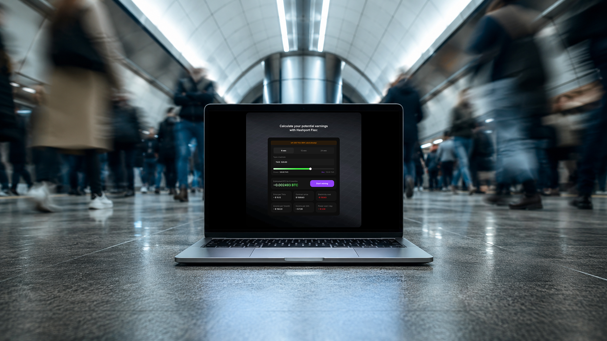
Редизайн калькулятора доходности EMCD для покупки майнинг-контракта
Смотреть проект
Сервис отслеживания беспилотного такси для T-Bank
Открыть фигму